Nasi Gandul
Pernah mencoba kuliner khas Pati yang satu ini? Nasi Gandul merupakan hidangan nasi dengan kuah gurih berbumbu rempah dan irisan daging sapi. Perpaduan rasa gurih dan aroma rempah menjadikannya salah satu makanan yang wajib dikenal saat berkunjung ke Kabupaten Pati.
Jelajahi Kuliner
Temukan berbagai pilihan kuliner yang bisa kamu kenali lebih jauh melalui Jelajah Pati.
Nasi Gandul
📍 Pati, Jawa Tengah
Nasi dengan kuah gurih berbumbu rempah dan irisan daging sapi.
Lihat Detail →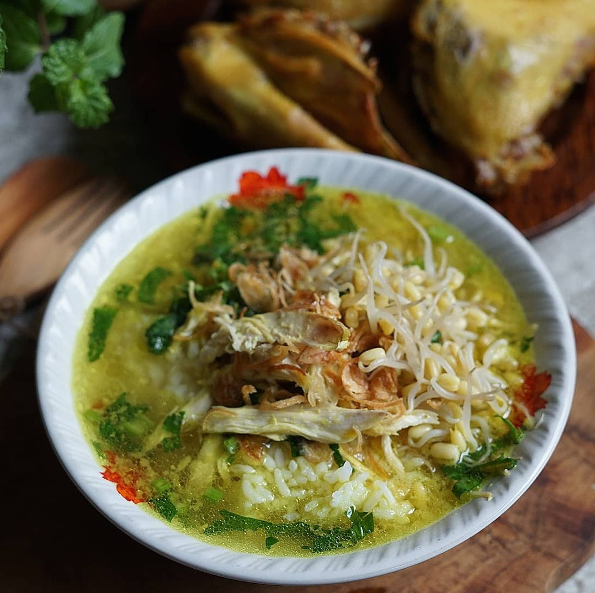
Soto Kemiri
📍 Desa Kemiri, Pati
Soto ayam dengan kuah berbumbu kemiri yang memiliki cita rasa khas.
Lihat Detail →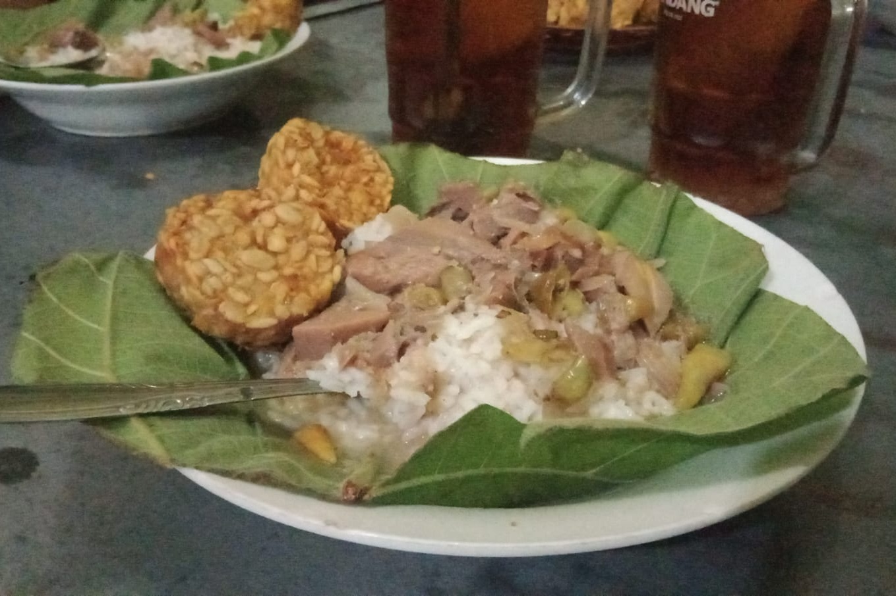
Sego Tewel
📍 Tambakromo, Pati
Nasi dengan sayur nangka muda yang dimasak menggunakan bumbu khas.
Lihat Detail →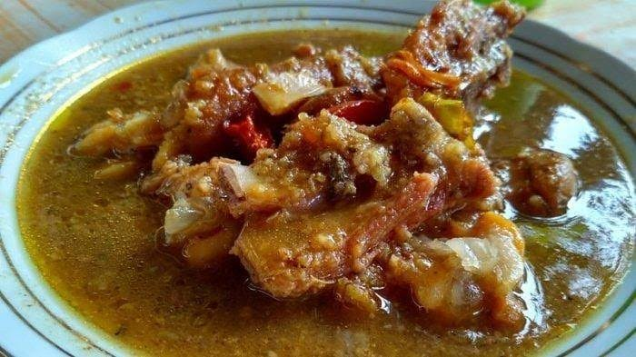
Petis Kambing Runting
📍 Runting, Pati
Olahan daging kambing dengan kuah kental dan bumbu rempah.
Lihat Detail →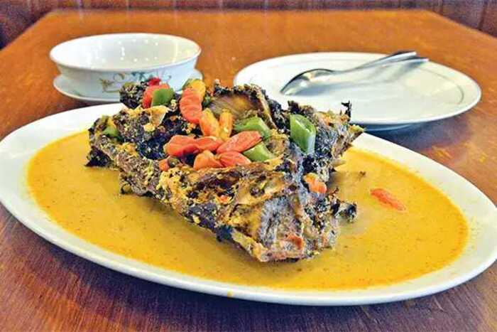
Mangut Ndas Manyung
📍 Wilayah pesisir Pati
Olahan kepala ikan manyung dengan kuah santan bercita rasa pedas.
Lihat Detail →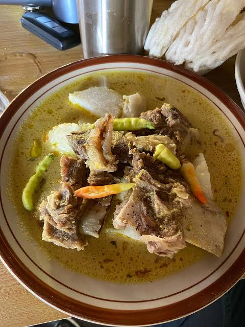
Lontong Balungan
📍 Desa Kropak, Pati
Hidangan lontong dengan olahan balungan dan kuah berbumbu.
Lihat Detail →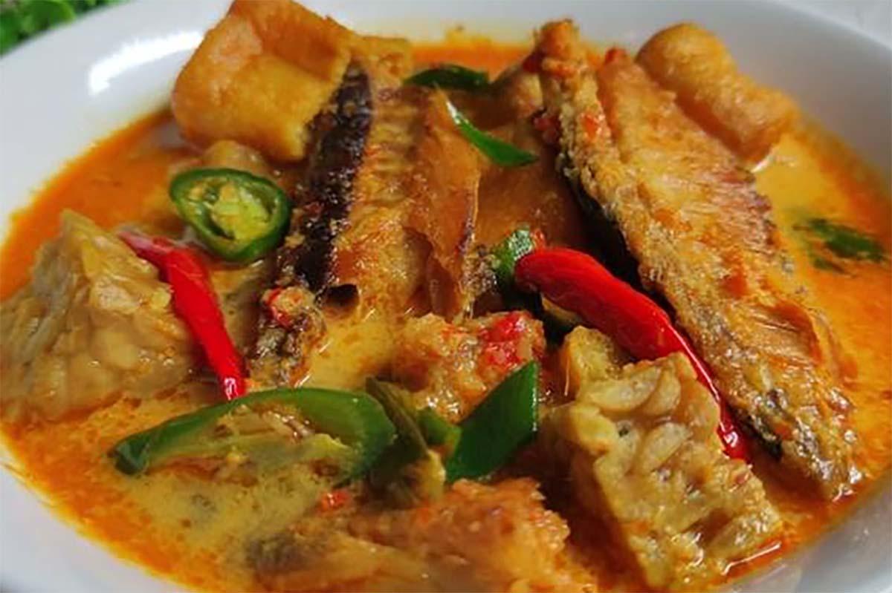
Kotokan Gereh Tongkol
📍 Pati, Jawa Tengah
Olahan ikan tongkol dengan kuah dan bumbu masakan tradisional.
Lihat Detail →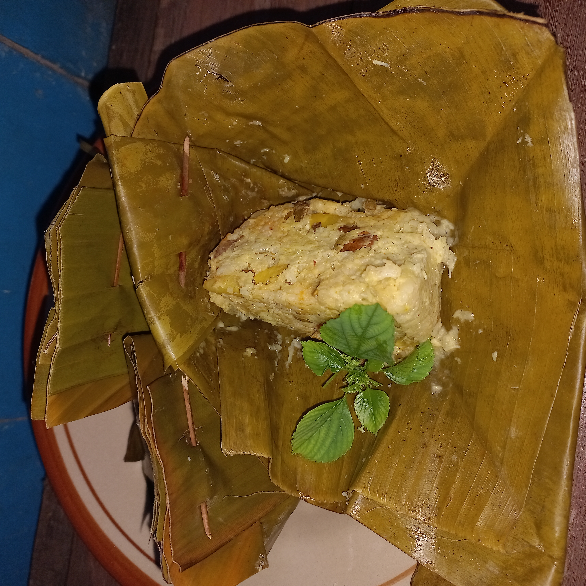
Botok Masin
📍 Pati, Jawa Tengah
Olahan tradisional berbumbu yang dikenal dalam kuliner lokal Pati.
Lihat Detail →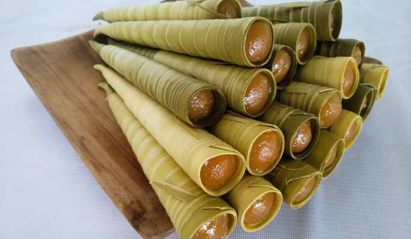
Dumbeg
📍 Pati, Jawa Tengah
Jajanan tradisional berbahan tepung beras, santan, dan gula merah yang berasal dari Rembang serta dikenal oleh masyarakat Pati.
Lihat Detail →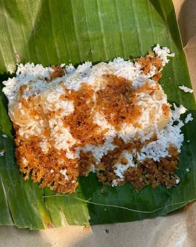
Gethuk Runting
📍 Runting, Pati
Jajanan tradisional yang dibuat dari bahan dasar singkong.
Lihat Detail →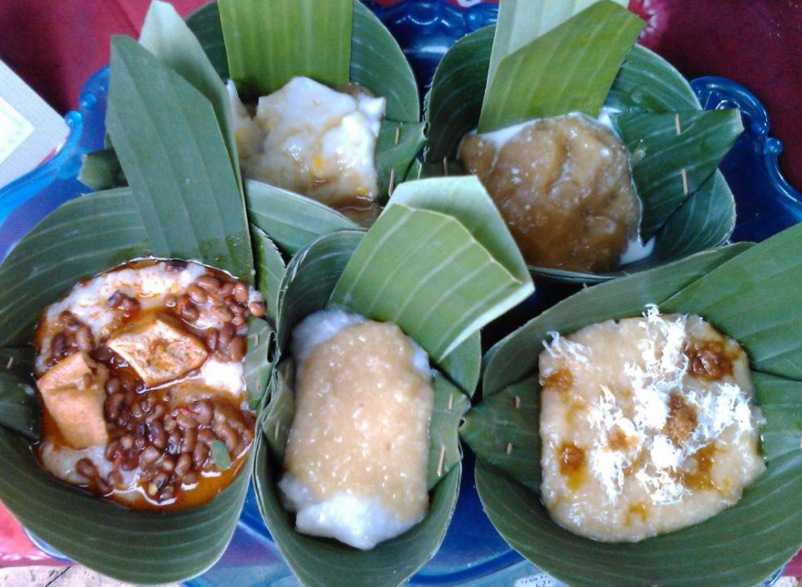
Jenang Landoh
📍 Landoh, Pati
Jajanan manis tradisional yang dikenal dari daerah Landoh.
Lihat Detail →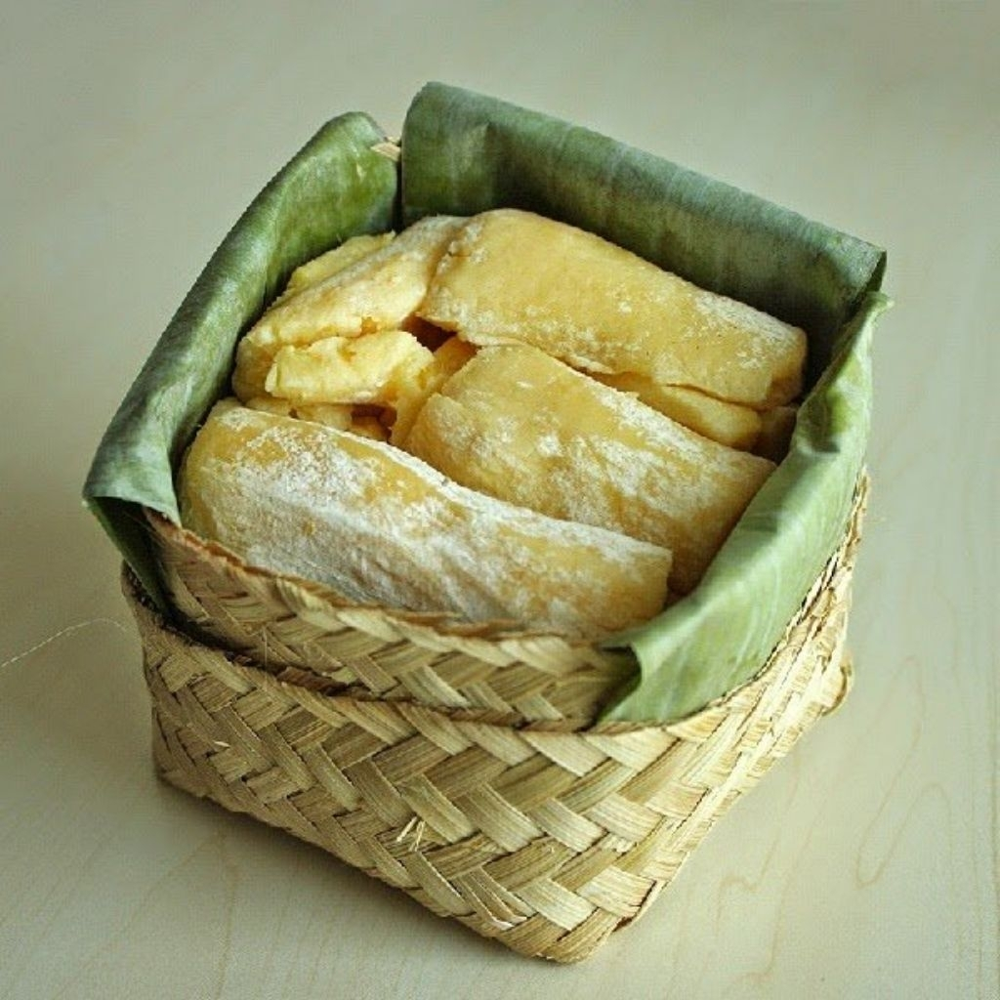
Tape Gembong
📍 Gembong, Pati
Olahan singkong hasil fermentasi yang dikenal dari daerah Gembong.
Lihat Detail →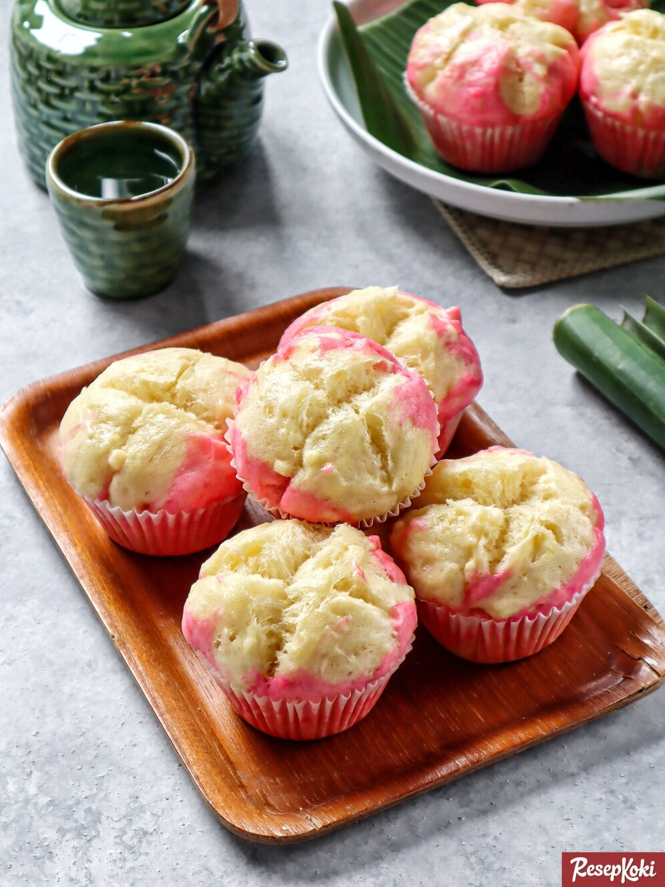
Kue Moho
📍 Pati, Jawa Tengah
Kue moho yang mekar merekah dengan tekstur lembut dan rasa manis yang pas, siap menghadirkan kehangatan tradisi di setiap gigitan.
Lihat Detail →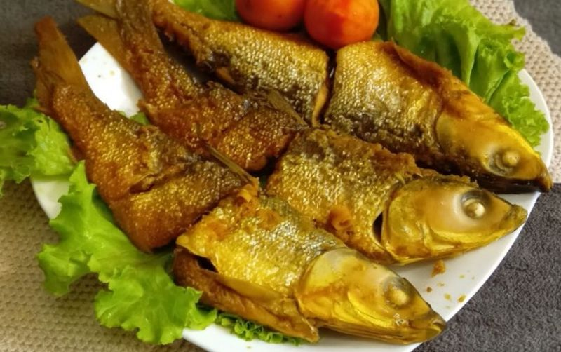
Bandeng Presto Juwana
📍 Juwana, Pati
Olahan ikan bandeng yang dimasak dengan teknik presto hingga durinya lunak.
Lihat Detail →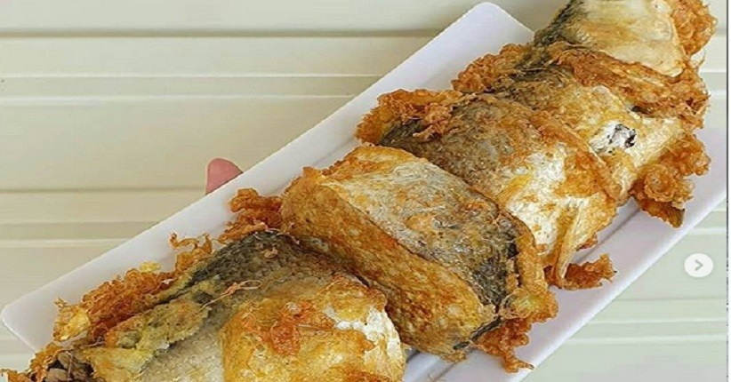
Otak-otak Bandeng
📍 Juwana, Pati
Olahan ikan bandeng yang dicampur dengan bumbu pilihan.
Lihat Detail →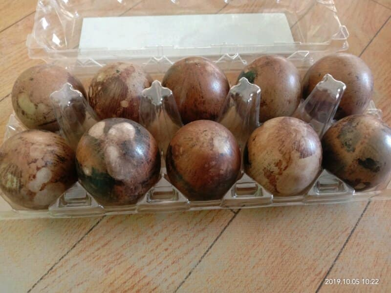
Telur Lurik
📍 Batangan, Pati
Telur lurik adalah varian produk telur ayam yang memiliki pola cangkang unik menyerupai motif kain lurik tradisional.
Lihat Detail →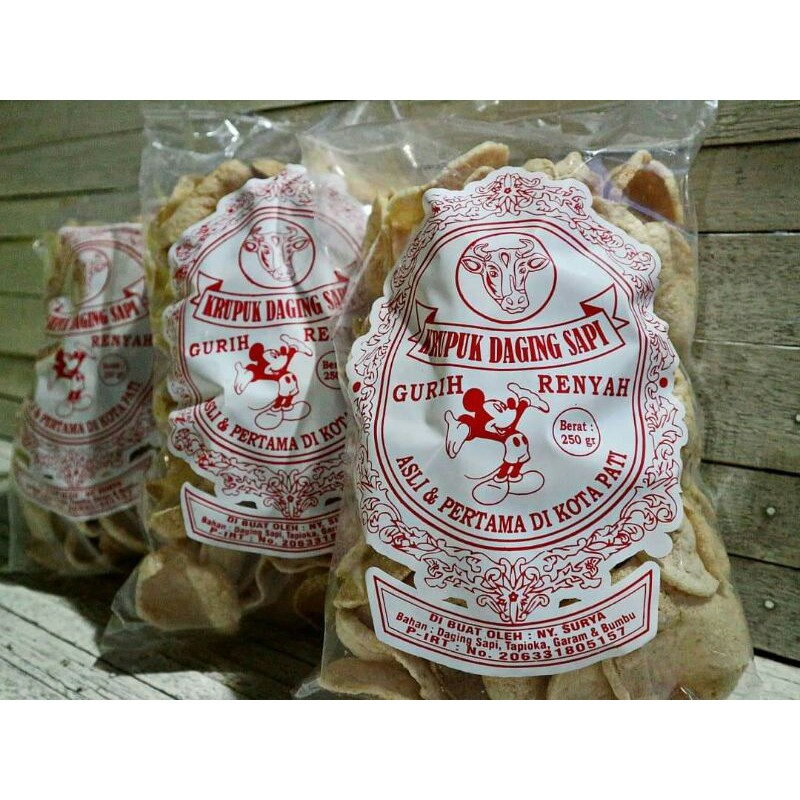
Kerupuk Daging
📍 Kabupaten Pati
Kerupuk berbahan olahan daging yang dapat dijadikan buah tangan.
Lihat Detail →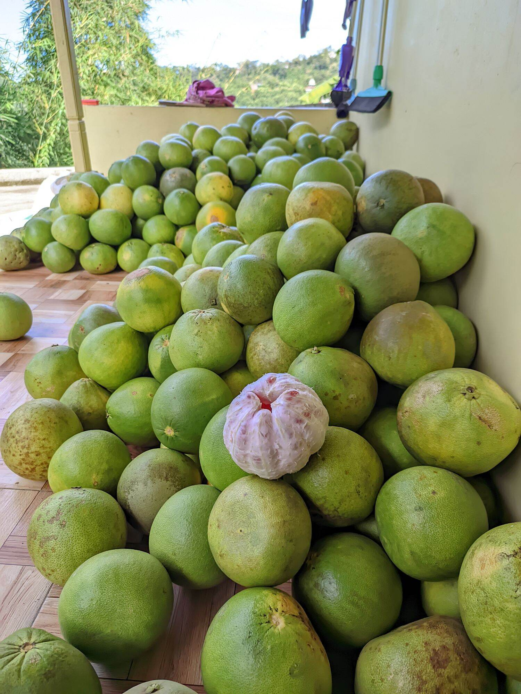
Jeruk Pamelo Gembong
📍 Gembong, Pati
Buah jeruk berukuran besar yang dikenal sebagai produk pertanian Gembong.
Lihat Detail →Kuliner tidak ditemukan.